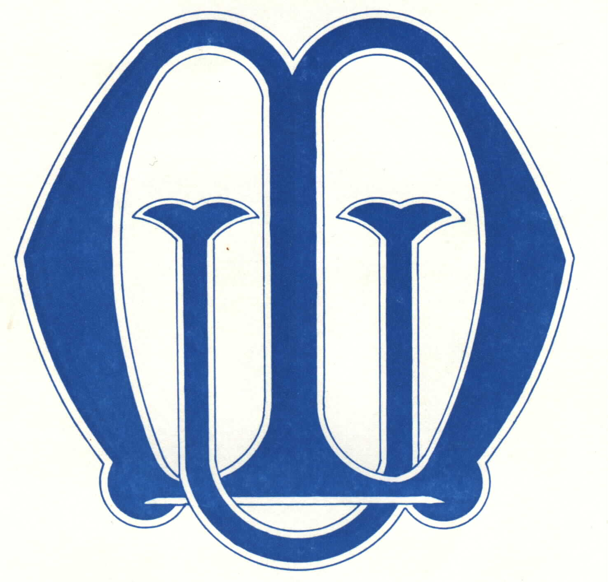
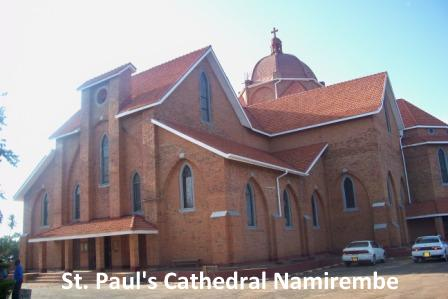
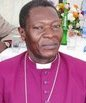
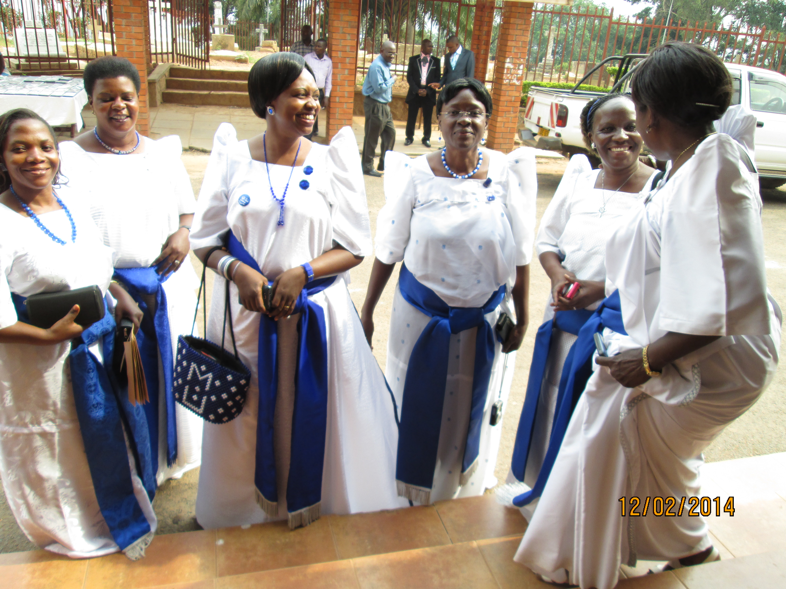
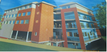

|

“Kibe ku nze nga bw’ogambye.”
|
Mothers’ Union
Namirembe Diocese
Church of Uganda (Anglican)
|
Obubaka Bwa President Eri Banakibiina
Yeebaza nnyo Omulabirizi w’e Namirembe The Rt. Rev. Wilberforce Kityo Luwalira ne Maama, abaaweereza Omuwandiisi w’Obulabirizi Rev. Can. Nelson Kaweesa eyakulira okulonda obulungi ennyo ku lunaku olwo, n’abasumba abaamuyambako omwali, Rev. Abraham Lubega Kisakye ne Rev. Ephrance Kakangula.
Muky. Josephine Kasaato y’azze mu kifo ky’omugenzi Christine Deborah Ssengendo eyakulembera nga President okuva mu mwaka 2006 okutuusa 2014, era ajjukirwa nnyo olw’omulimu omulungi gweyakola.
Okulonda Okujjudde Obweerufu
|  |  |

|
| Namirembe Cathedral | Bishop Luwalira | Canon Kaweesa |
Okulonda akakiiko akafuzi aka Mothers’ Union ak’Obulabirizi, kwaali kwanjawulo okuva ku kulonda okumanyiddwa mu Uganda, olw’ensonga nti tekwalimu kwemulugunya oba muntu kugamba nti tamatidde ngeri gyekukoleddwamu. Rev. Can. Nelson Kaweesa yeesigama ku Ssemateeka omuggya owa Mothers’ Union, anagobererwanga mu kulonda President wamu ne Executive yonna, okuva ne leero.
Abalonzi abaakuba akalulu be ba Ssentebe b’Obussabadikoni, ba Ssentebe b’Obusumba, wamu ne ba Ssentebe b’obukiiko obw’okubulabirizi. Ba Maama baffe bakyala b’abalabirizi baaliwo ng’abagenyi era bbo tebaalonda wabula baayagaliza President n’olukiiko lwe obuweereza obulungi. Mububaka bwebaayisa mu Maama Faith Kityo Luwalira, beebaza nnyo ababaddeko olw’obuweereza obulungi bwebakoze mu Mothers’ Union.
Ebyaava mu Kulonda
Abalonzi baali 71 era ebyava mu kulonda byebino wammanga
| Ekifo | Erinnya | Obululu |
|---|---|---|
| President | Josephine Kasaato | 52 |
| Robinah Ssebugwaawo | 14 | |
| Deborah Musisi Sekalo | 5 | |
| Minute Secretary | Harriet Mukasa | 47 |
| Anne Lwanga | 23 | |
| Treasurer | Jolly Rwakabwohe | ✓ |
| Link & Publicity | Nalongo Sanyu Kalibwani | 45 |
| Anne Lwanga | 23 | |
| Mission | Susan Ssettaala | 53 |
| Sarah Kasaato Muluya | 14 |
Ebitonotono Ebikwaata ku Bakyala Bano

Omukolo gw’Okulayiza Mawuuno
President ne Executive ye ey’abantu abataano baatambulira mu mmotoka B.M.W era nga eriko ne Number plate “5” nga nabo baali bataano. Batuukira mu mizira egyakubibwa abakyala bonna mu Bulabirizi era nga bwebawuuba bendera ezaali mu langi ya Mothers’ Union nga zino zaakolebwa ab’Obussabadikoni bwe Kazo. Omukolo gw’okulayiza President ne Executive gwakolebwa mukadde waffe Dean wa Lutikko eyakiikirira kitaffe mu Katonda Omulabirizi w’e Namirembe. Omukolo gw’okusaba n’okulayiza President ne Executive gwali mu Kkanisa Lutikko e Namirembe era oluvannyuma abagenyi baasembezebwa mu Dunstan Nsubuga Hall eyali etimbiddwa obulungi ennyo era eyo abakulembeze abakadde gye baakwasiza abaggya report zaabwe ezaalimu ebibadde mu office zebabaddemu. President yeebaza nnyo X-Vice President Omuky. Florence Wamala olw’obuweereza bwonna bw’akoze mu kisanja ekiwedde.
Okusoomooza Abalonde Kweboolekedde
Ebimu kubisoomooza abalonde byeboolekedde byebino:
- Okunnyikiza enjiri ya Mukama waffe Yesu Kristo mu bafumbo. Bangi abayita mu kusomoozebwa kw’obutabanguko mu maka wamu n’ebisiyaga ebigenda bisensera amaka ne mu baana baffe. Eddiini yetaagibwa nnyo mukakyo kano.
- Okuziba oluwonko oluli wakati w’abafumbo abato n’abo abakuze.
- Eddimu eddene ery’okuzimba ekizimbe Galikwoleka—Mothers’ Union Plaza (mukifananyi wamanga). Tusaba Katonda owomu ggulu atuwe obuwanguzi. Nekemiya 1:2-20.

Namirembe FM
Eno ye radio ya Church of Uganda, Namirembe Diocese (Anglican) esoose okubaawo. Erina byewereeza bingi nnyo ebiyigiriza ate nga binyuma. Buli mukristayo kyandimukakaseeko okujitega era obutakyuusa kalimi. Kuliko programme “Ekyemisana Katonda Kyagabudde” eyo President wa MU Omuky. Josephine Kasaato ne Maama Faith Luwalira, basaale nnyo mukubuulira enjiri.
Olunaku Lwa Maliyamu Olw’Omwaka Guno
Olunaku olwo luggulwawo nga 25th March ku Katwe Matyrs Church. Ate ku Sunday nga 30th March, buli member wa Mothers' Union alisabira mu Kkanisaye nga ayambadde uniform. Ba members mugenderere nnyo mulabe nga enkola eyasalibwawo Obulabirizi egobererwa, era mufube okulaba nga muweereza mu Kkanisa kulunaku olwo. Nebwemubeera temufunye mukisa guwereza, mulabe nga form ebawereddwa eraga ebirabo ebiwereddwayo olunaku olwo mubuli service yonna ejjuzibwa. Oluvannyuma forms ezo ziwerezebwe ku Diocese, okusobola okulondoola sente ezinaaba zikuŋŋanyiziddwa.
Mothers’ Union Efunye Ssemateeka Omuggya
Ssemateeka omuggya yatandika okukola okuva nga 22nd November, 2013. Ebimu kubyakyusibwa, bwebuyigirize President w’ekibiina bw’alina okuba nabwo, ebifo ebimu nga eky’omukwanaganya w’emirimu n’eky’amawulire byagattibwa nekiba ekifo kimu. Bannakibiina bakubirizibwa buli kinnoomu okufuna copy agisome agitegeere; era erambika n’okulonda ku mitendera gyonna.
Olugendo lw’e Nigeria Lwengedde!
Aba Mothers’ Union Nigeria Jos Diocese (Anglican), baayita banaabwe aba Namirembe Diocese, okubakyalira nga 28th May 2014. Kale buli an’agenda asaanidde okuba nga amaze okuttaanya enteekateeka ez’olugendo olwo.
Ebinakolebwa Omwaka Guno
- 25th March 2014
- Okuggulawo Maliyamu mu Katwe Martyrs Church.
- 15th May 2014
- Lunaku lw’amaka munsi yonna.
- 23rd May 2014
- Okusaba kwa M.U. okw’omulundi ogwokubiri.
- 28th May-2nd June, 2014
- Okugenda okulambula mu Bulabirizi bw’e Jos Plateau, mu Nigeria.
- June, 2014
- Okutongoza okutunda emigabo ku Busumba n’Obussabadikoni.
- 13th June 2014
- Okusomesa abakulembeze abapya; ba ssetebe ab’Obusumba, Obussabadikoni, obukiiko n’olukiiko olufuzi olw’Obulabirizi.
- 22nd July 2014
- Omulabirizi asisinkana M.U. Diocesan Executive.
- 22nd July 2014
- Magdalene’s Day
- 14th-16th August 2014
- Focusfest mu Gayaza Archdeaconry
- 18th-31st August 2014
- Mothers’ Union Buganda Conference